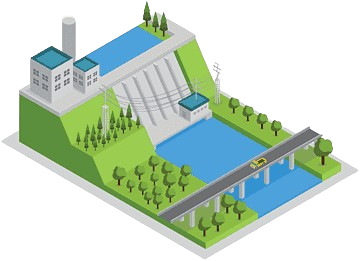
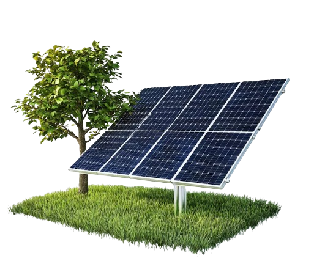
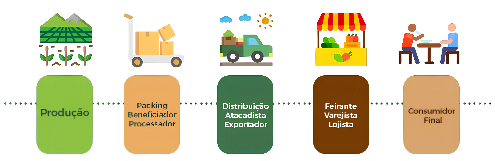

MATRIZES ENERGÉTICAS
A matriz energética é o conjunto de todas as fontes de energia disponíveis e utilizadas por um país para movimentar sua economia e atender às necessidades da população. Em outras palavras, ela representa de onde vem a energia que usamos no nosso dia a dia – seja para acender uma lâmpada, abastecer um carro, produzir bens em uma fábrica ou manter hospitais e escolas funcionando. Cada país possui uma matriz energética própria, baseada em fatores como a disponibilidade de recursos naturais, o nível de desenvolvimento tecnológico, as políticas governamentais e os investimentos realizados no setor de energia. Essa matriz é formada por diversas fontes de energia, que se dividem em dois grupos principais: renováveis e não renováveis.
Importância na economia brasileira
A matriz energética exerce um papel central na economia brasileira, sendo determinante para o desenvolvimento socioeconômico do país. Uma matriz energética robusta e diversificada contribui diretamente para o crescimento econômico, pois assegura o fornecimento contínuo de energia às atividades produtivas, estimula a geração de empregos e promove a melhoria da qualidade de vida da população. Além disso, o Brasil se destaca internacionalmente por dispor de uma ampla variedade de recursos naturais renováveis, como as hidrelétricas e a biomassa, o que o coloca em uma posição privilegiada na transição para uma matriz energética mais limpa e sustentável, em sintonia com os compromissos ambientais globais. A disponibilidade de energia a custos mais acessíveis e com alto grau de confiabilidade representa um fator estratégico para a competitividade da indústria nacional, reduzindo os custos operacionais, atraindo investimentos estrangeiros e fortalecendo a posição do Brasil no comércio internacional. Outro aspecto relevante é a redução da dependência de fontes externas: ao investir no aproveitamento de seus próprios recursos energéticos, o país fortalece sua segurança energética e minimiza os riscos associados à volatilidade do mercado internacional e às crises geopolíticas. Assim, a matriz energética brasileira não apenas sustenta o funcionamento da economia, mas também projeta o Brasil como um agente ativo e responsável no cenário energético global.
Tipos de Matrizes Energéticas
Hidrelétrica
Principal fonte no Brasil. Renovável, mas depende da água dos rios.
Solar
Fonte limpa e promissora. Custo de instalação ainda é elevado.
Carvão Mineral
Alta emissão de poluentes. Pouco usada no Brasil.
Eólica
Energia gerada pelo vento. Limpa e crescente no Nordeste.
Características das Matrizes
No caso do Brasil, a matriz energética apresenta-se como uma das mais renováveis do mundo, com expressiva participação de fontes como a energia hidráulica e a biomassa. Ainda assim, a utilização de combustíveis fósseis permanece significativa, especialmente nos setores de transporte e geração de derivados do petróleo.
As matrizes energéticas são compostas por diversas fontes, podendo incluir tanto recursos renováveis, como solar, eólica, hidráulica e biomassa, quanto não renováveis, como petróleo, carvão, gás natural e energia nuclear. A composição dessas matrizes varia conforme os recursos disponíveis e as prioridades de cada país. Enquanto o Brasil se destaca por sua forte presença de fontes renováveis, outros países ainda mantêm grande dependência de combustíveis fósseis. Apesar do crescimento das energias limpas, o petróleo e o carvão continuam sendo amplamente utilizados, especialmente em nações desenvolvidas. Nesse contexto, a eficiência energética torna-se essencial, promovendo o uso racional da energia e contribuindo para a redução dos impactos ambientais. A matriz energética brasileira é notável pela predominância de fontes renováveis, principalmente a energia hidráulica e a biomassa, embora os combustíveis fósseis ainda desempenhem papel importante. Já a matriz elétrica do país apresenta-se como ainda mais limpa, com destaque para a geração hidroelétrica.Exportações e Importações
O Brasil possui uma matriz energética diversificada, com forte presença de fontes renováveis. No entanto, o país ainda realiza importações significativas de combustíveis fósseis, como o gás natural e derivados de petróleo, especialmente para suprir demandas específicas do setor de transportes e da indústria. Ao mesmo tempo, o Brasil é exportador de petróleo bruto, etanol e energia elétrica em determinadas regiões de fronteira, como para a Argentina e o Paraguai (no caso da Usina de Itaipu). Essa relação entre exportações e importações reflete tanto os avanços quanto os desafios na autossuficiência energética brasileira.
Cadeia Produtiva da Energia no Brasil
A cadeia produtiva da energia no Brasil é composta por várias etapas: exploração, produção, transformação, distribuição e consumo final. No setor de petróleo, por exemplo, essa cadeia inclui desde a extração em campos terrestres ou marítimos (como o pré-sal), o refino nas refinarias nacionais, até a distribuição para os postos de combustíveis. No caso das fontes renováveis, como a biomassa e a energia hidráulica, há também uma complexa rede produtiva, que envolve desde a produção agrícola (como a cana-de-açúcar para o etanol), a geração de energia nas usinas e a transmissão até os centros consumidores.
Soluções Sustentáveis
Energia
Promover o uso de fontes renováveis, como solar, eólica, hidráulica e biomassa, é essencial para reduzir os impactos ambientais da geração de energia e diminuir a dependência de combustíveis fósseis, mais poluentes e finitos.
Eficiência Energética
Trata-se de utilizar a energia de forma mais racional, com equipamentos e sistemas modernos que consomem menos, resultando em economia e menor impacto ambiental.
Mobilidade Sustentável
Visa reduzir a poluição e o trânsito urbano por meio do uso de veículos elétricos, transporte público eficiente e o incentivo ao uso de bicicletas e formas alternativas de locomoção.
Gestão de Resíduos
Inclui ações como reciclagem, compostagem e reaproveitamento de materiais, com o objetivo de diminuir a quantidade de lixo nos aterros e preservar os recursos naturais.
Preservação Ambiental
Envolve a proteção de florestas, rios e biodiversidade, além de práticas como o reflorestamento e o combate ao desmatamento, para garantir o equilíbrio dos ecossistemas.
CADEIAS PRODUTIVAS
A cadeia produtiva é o conjunto de processos e etapas interligadas que envolvem a produção de um bem ou serviço, desde a extração ou produção da matéria-prima até a entrega do produto final ao consumidor. Cada etapa dessa cadeia contribui para agregar valor ao produto, envolvendo diferentes setores da economia, como a agricultura, a indústria, os serviços de transporte, a comercialização e o consumo final.
Fontes Oficiais
- Empresa de Pesquisa Energética (EPE)
- Agência Nacional de Energia Elétrica (ANEEL)
- Ministério de Minas e Energia (MME)
- Agência Nacional do Petróleo, Gás Natural e Biocombustíveis (ANP)
- Instituto Brasileiro de Geografia e Estatística (IBGE)
- FGV Energia
- Agência Internacional de Energia (IEA)
- Plataforma Brasil 2050 - Sustentabilidade e Energia